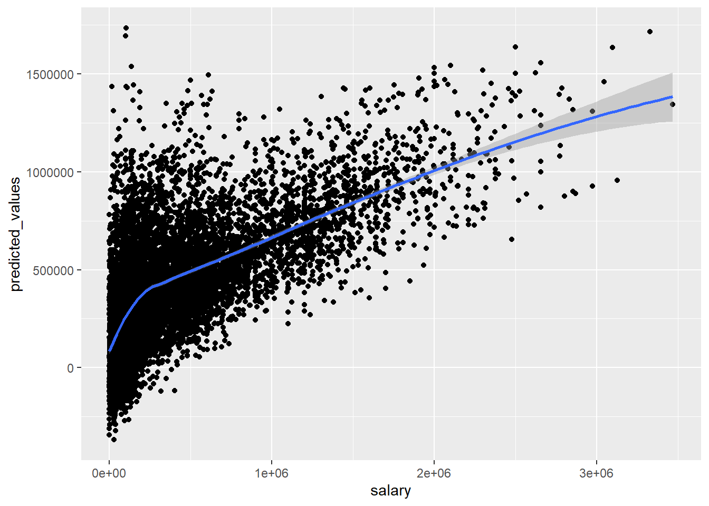
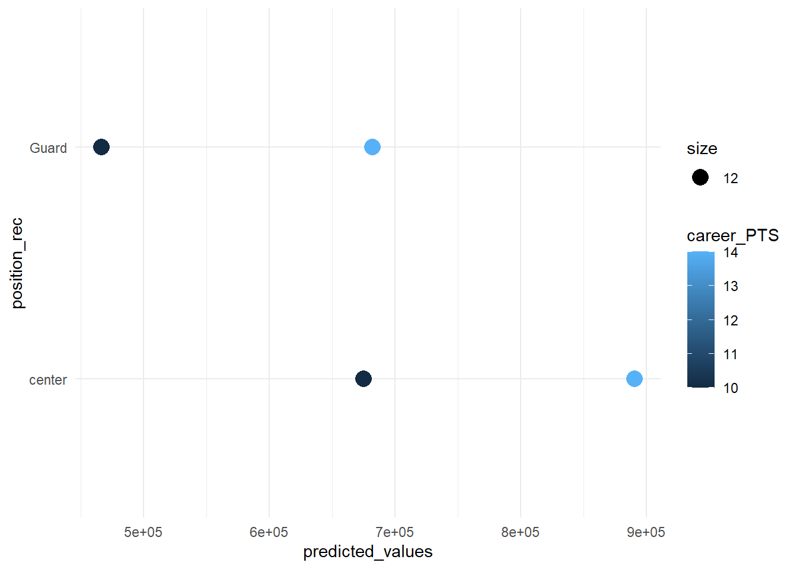
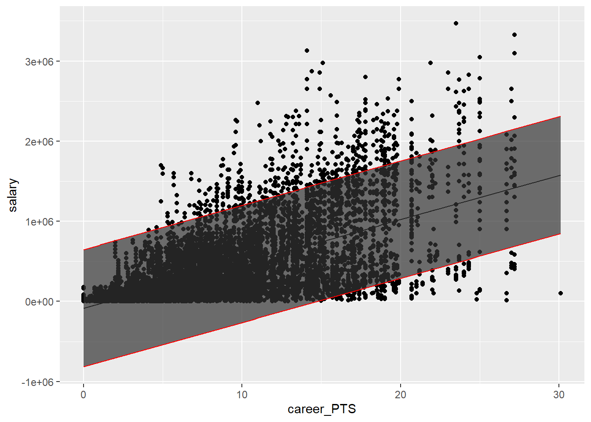
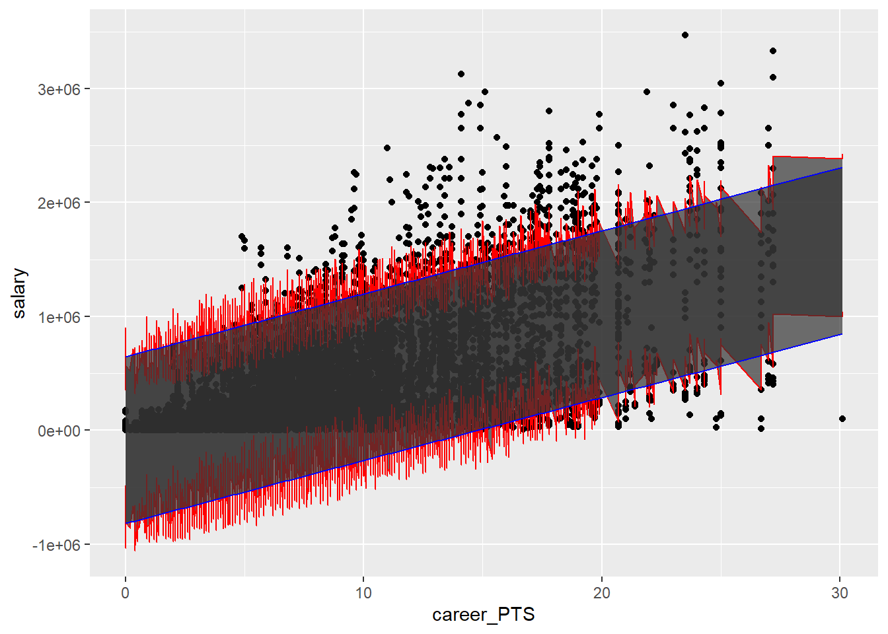

11 Prediction - Theory
In prior weeks, you learned how to build a linear regression model. The main interest we pursued so far was to arrive at a good estimate of one independent variable (points scored in NBA basketball league) on an outcome (salary of NBA players).
With the help of DAGs, we identified relevant “counfounders” we should adjust for to “isolate’ the effect of points as much as possible and reduce bias. COnfounders enter as covariates in in the model.
With the help of mediation analysis, we were then interested what “explains” or “mediates” the effect of x on y. We use additional variables which we assume operate as mechanisms of the causal effect of x on y and we test how much of the effect of x and y can be attributed to this mediator. In our example, we found that points scored do not really explain why guards earn less money in the NBA compared to centers.
All what we have done so far can be considered part of causal inference, i.e. understanding why an outcome varies. A different perspective is the perspective of PREDICTION.Prediction is at the heart of appraoches in “data science” and “machine learning”.
In this scenario, we build regression models (or other models) simply to predict and outcome. The main interest is not to learn more about how the outcome can be explained but to predict something with it which we want to know. Machine learning then takes it a step further and simply iteratively select the best models among hundrets of options to arrive at the best possible prediction (more on that at the end of the class). First, we will learn how to predict values based on a linear regression model.
11.1 How prediction works
For a linear regression model, prediction is very straight forward. Linear regression is all about finding a straight line through a cloud of points that lie on as many dimensions as there are variables in model. The model provides you with an intercept (i.e. where the line touches the Y-Axis, and a slope; the increase in y given one unit increase in x. The unit is whatever the scale of the x variable is). The formula is y= b + ßx + €. Any prediction is the on the line. You know the intercept, you plug in a value for x and you get your predicted y.
-> visual here.
Let’s apply this logic to our NBA data. Remember in prior weeks, we built a linear model to estimate the effect of points scored on average per game and salaries of players. Let’s assume we now want to predict salaries of players and don’t care too much about the scores. We can consider a range of variables which we think explain variation in salaries. The better we can capture variation in salaries between players, the more precise our prediction will be.
Now, you may rightfully ask: “Why do we want to predict salaries if we already know the actual salaries!?” Fair point. Prediction is commonly used to predict values which we don’t have. Imagine there are some players that don’t report their salaries. We could predict their salaries based on what we know from players who are similar to them in many other observable characteristics. Or imagine we want to predict the salary of a hypothetical player that does not exist. Imagine an average players would like to know how much he could earn more if player more like other players. We can predict that. Last example, imagine we want to forecast how much a player makes next year, depending on his past performance.
Machine learning is basically predicting outcomes that are no known based on very large datasets. You provide R with a million photos of animals, you build a model to explain which animal is a cat. The you apply the model to new data and the model predicts whether there is a cat in the photo. Of course, machine learning gets much more complicated quickly, however, the basic logic is the logic of prediction.
model1 <- lm(salary ~ career_PTS + position_rec + season_start +
age, data = data_nba)
# base R way to get predicted values
data_nba$predicted_values <- model1$fitted.values
data_nba <- data_nba %>% dplyr::select('_id', name, salary, predicted_values, everything())
data_nba %>%
ggplot(aes(x=salary, y=predicted_values)) +
geom_point() +
geom_smooth(method = "loess")## `geom_smooth()` using formula = 'y ~ x'
# new tidyverse way to get predicted values
library(broom)
# broom package has nice features to work with models
# tidy() converts the model output into a dataframe, makes it easy to process further, e.g. make graphs etc.
tidy(model1)## # A tibble: 25 × 5
## term estimate std.error statistic p.value
## <chr> <dbl> <dbl> <dbl> <dbl>
## 1 (Intercept) -568370. 29308. -19.4 3.15e-82
## 2 career_PTS 53791. 731. 73.6 0
## 3 position_recForward -140645. 12779. -11.0 5.24e-28
## 4 position_recGuard -208234. 12166. -17.1 9.89e-65
## 5 position_recMixed -103661. 12104. -8.56 1.26e-17
## 6 season_start1999 29357. 22884. 1.28 2.00e- 1
## 7 season_start2000 77209. 23559. 3.28 1.05e- 3
## 8 season_start2001 106436. 23625. 4.51 6.71e- 6
## 9 season_start2002 130348. 23627. 5.52 3.54e- 8
## 10 season_start2003 135221. 23648. 5.72 1.11e- 8
## # ℹ 15 more rows## # A tibble: 1 × 12
## r.squared adj.r.squared sigma statistic p.value df logLik AIC BIC
## <dbl> <dbl> <dbl> <dbl> <dbl> <dbl> <dbl> <dbl> <dbl>
## 1 0.432 0.431 352361. 308. 0 24 -138041. 2.76e5 2.76e5
## # ℹ 3 more variables: deviance <dbl>, df.residual <int>, nobs <int># augment creates a dataframe with the predicted values for everyobservation in the dataframe.
nba_salalary_predicted <- augment(model1)The output above, get you the predicted values for the observations in the dataset. This is mostly used to evaluate the model itself. The bigger the difference between the predicted values and the actual values (so-called residuals), the worse the model.
Now, let’s predict the salary of hypothetical players:
##
## center Forward Guard Mixed
## 1204 2130 3051 3343# create all combination of the control variables which you want to predict
prediction.data <- tibble(
position_rec = c("center", "center", "Guard", "Guard"),
career_PTS = c(10, 14, 10, 14),
age = c(20,20,20,20),
season_start = c("2017", "2017", "2017", "2017")
)
# apply the model to the "new" dataset
predict(model1,
prediction.data)## 1 2 3 4
## 675129.3 890294.2 466895.1 682059.9prediction.data$predicted_values <- predict(model1,
prediction.data)
prediction.data %>% ggplot() +
geom_point(aes(position_rec, predicted_values,
color=career_PTS,
size=12)) +
coord_flip() +
theme_minimal()
We can see that there is a huge salary increase predicted for just making two more baskets (i.e. 4 points) on average each game, for both guards and centers. We also see that centers make more money generally.
There is another way to get predicted values using the margins() function.
library(margins)
# This gets you the average change in predicted value for a unit-increase in the all model variables.
margins(model1)## career_PTS age position_recForward position_recGuard position_recMixed
## 53791 16809 -140645 -208234 -103661
## season_start1999 season_start2000 season_start2001 season_start2002
## 29357 77209 106436 130348
## season_start2003 season_start2004 season_start2005 season_start2006
## 135221 150576 174625 183653
## season_start2007 season_start2008 season_start2009 season_start2010
## 206434 231505 204116 192220
## season_start2011 season_start2012 season_start2013 season_start2014
## 183026 182509 199072 174359
## season_start2015 season_start2016 season_start2017
## 206791 305228 369398## factor position_rec career_PTS AME SE z
## age 1.0000 10.0000 16809.4290 822.1461 20.4458
## age 1.0000 14.0000 16809.4290 821.2659 20.4677
## age 2.0000 10.0000 16809.4290 821.3697 20.4651
## age 2.0000 14.0000 16809.4290 810.1705 20.7480
## career_PTS 1.0000 10.0000 53791.2088 673.5739 79.8594
## career_PTS 1.0000 14.0000 53791.2088 777.6596 69.1706
## career_PTS 2.0000 10.0000 53791.2088 672.1461 80.0290
## career_PTS 2.0000 14.0000 53791.2088 869.2152 61.8848
## position_reccenter 1.0000 10.0000 208234.2670 12165.6828 17.1165
## position_reccenter 1.0000 14.0000 208234.2670 12165.6828 17.1165
## position_reccenter 2.0000 10.0000 208234.2670 12165.6828 17.1165
## position_reccenter 2.0000 14.0000 208234.2670 12165.6828 17.1165
## season_start1999 1.0000 10.0000 29356.8409 22884.2755 1.2828
## season_start1999 1.0000 14.0000 29356.8409 22884.2755 1.2828
## season_start1999 2.0000 10.0000 29356.8409 22884.2755 1.2828
## season_start1999 2.0000 14.0000 29356.8409 22884.3468 1.2828
## season_start2000 1.0000 10.0000 77209.1717 23559.4567 3.2772
## season_start2000 1.0000 14.0000 77209.1717 23559.4567 3.2772
## season_start2000 2.0000 10.0000 77209.1717 23559.4567 3.2772
## season_start2000 2.0000 14.0000 77209.1717 23559.4567 3.2772
## season_start2001 1.0000 10.0000 106435.5787 23624.8634 4.5052
## season_start2001 1.0000 14.0000 106435.5787 23624.8634 4.5052
## season_start2001 2.0000 10.0000 106435.5787 23624.8634 4.5052
## season_start2001 2.0000 14.0000 106435.5787 23624.8621 4.5052
## season_start2002 1.0000 10.0000 130348.2150 23627.2203 5.5169
## season_start2002 1.0000 14.0000 130348.2150 23627.2203 5.5169
## season_start2002 2.0000 10.0000 130348.2150 23627.2203 5.5169
## season_start2002 2.0000 14.0000 130348.2150 23627.2203 5.5169
## season_start2003 1.0000 10.0000 135220.5712 23648.3086 5.7180
## season_start2003 1.0000 14.0000 135220.5712 23648.3086 5.7180
## season_start2003 2.0000 10.0000 135220.5712 23648.3086 5.7180
## season_start2003 2.0000 14.0000 135220.5712 23648.3047 5.7180
## season_start2004 1.0000 10.0000 150575.6148 23423.7814 6.4283
## season_start2004 1.0000 14.0000 150575.6148 23423.7814 6.4283
## season_start2004 2.0000 10.0000 150575.6148 23423.7814 6.4283
## season_start2004 2.0000 14.0000 150575.6148 23416.9662 6.4302
## season_start2005 1.0000 10.0000 174625.3789 23247.7154 7.5115
## season_start2005 1.0000 14.0000 174625.3789 23247.7154 7.5115
## season_start2005 2.0000 10.0000 174625.3789 23247.7154 7.5115
## season_start2005 2.0000 14.0000 174625.3789 23240.9439 7.5137
## season_start2006 1.0000 10.0000 183653.2187 23057.8278 7.9649
## season_start2006 1.0000 14.0000 183653.2187 23071.2667 7.9603
## season_start2006 2.0000 10.0000 183653.2187 23071.2569 7.9603
## season_start2006 2.0000 14.0000 183653.2187 23071.2471 7.9603
## season_start2007 1.0000 10.0000 206434.1344 23336.8298 8.8459
## season_start2007 1.0000 14.0000 206434.1344 23336.8298 8.8459
## season_start2007 2.0000 10.0000 206434.1344 23336.8298 8.8459
## season_start2007 2.0000 14.0000 206434.1344 23330.0326 8.8484
## season_start2008 1.0000 10.0000 231505.0635 23507.2919 9.8482
## season_start2008 1.0000 14.0000 231505.0635 23507.2919 9.8482
## season_start2008 2.0000 10.0000 231505.0635 23507.2919 9.8482
## season_start2008 2.0000 14.0000 231505.0635 23500.4440 9.8511
## season_start2009 1.0000 10.0000 204115.6638 23475.4934 8.6948
## season_start2009 1.0000 14.0000 204115.6638 23489.1731 8.6898
## season_start2009 2.0000 10.0000 204115.6638 23489.1731 8.6898
## season_start2009 2.0000 14.0000 204115.6638 23489.1586 8.6898
## season_start2010 1.0000 10.0000 192219.8545 23548.5054 8.1627
## season_start2010 1.0000 14.0000 192219.8545 23548.5054 8.1627
## season_start2010 2.0000 10.0000 192219.8545 23548.5054 8.1627
## season_start2010 2.0000 14.0000 192219.8545 23555.3511 8.1603
## season_start2011 1.0000 10.0000 183025.8381 23534.7356 7.7768
## season_start2011 1.0000 14.0000 183025.8381 23534.7356 7.7768
## season_start2011 2.0000 10.0000 183025.8381 23534.7356 7.7768
## season_start2011 2.0000 14.0000 183025.8381 23534.7356 7.7768
## season_start2012 1.0000 10.0000 182509.4584 23219.2518 7.8603
## season_start2012 1.0000 14.0000 182509.4584 23219.2518 7.8603
## season_start2012 2.0000 10.0000 182509.4584 23219.2518 7.8603
## season_start2012 2.0000 14.0000 182509.4584 23212.4961 7.8626
## season_start2013 1.0000 10.0000 199072.4713 24314.5882 8.1874
## season_start2013 1.0000 14.0000 199072.4713 24314.5882 8.1874
## season_start2013 2.0000 10.0000 199072.4713 24314.5882 8.1874
## season_start2013 2.0000 14.0000 199072.4713 24321.6667 8.1850
## season_start2014 1.0000 10.0000 174358.9208 22746.2703 7.6654
## season_start2014 1.0000 14.0000 174358.9208 22733.0380 7.6698
## season_start2014 2.0000 10.0000 174358.9208 22733.0380 7.6698
## season_start2014 2.0000 14.0000 174358.9208 22733.0380 7.6698
## season_start2015 1.0000 10.0000 206791.4964 22900.6232 9.0300
## season_start2015 1.0000 14.0000 206791.4964 22887.2931 9.0352
## season_start2015 2.0000 10.0000 206791.4964 22887.2931 9.0352
## season_start2015 2.0000 14.0000 206791.4964 22887.3012 9.0352
## season_start2016 1.0000 10.0000 305227.6577 22617.9191 13.4949
## season_start2016 1.0000 14.0000 305227.6577 22617.9191 13.4949
## season_start2016 2.0000 10.0000 305227.6577 22617.9191 13.4949
## season_start2016 2.0000 14.0000 305227.6577 22617.9191 13.4949
## season_start2017 1.0000 10.0000 369398.3511 22665.9479 16.2975
## season_start2017 1.0000 14.0000 369398.3511 22665.9479 16.2975
## season_start2017 2.0000 10.0000 369398.3511 22665.9479 16.2975
## season_start2017 2.0000 14.0000 369398.3511 22655.0335 16.3054
## p lower upper
## 0.0000 15198.0523 18420.8057
## 0.0000 15199.7774 18419.0806
## 0.0000 15199.5740 18419.2841
## 0.0000 15221.5240 18397.3341
## 0.0000 52471.0281 55111.3895
## 0.0000 52267.0240 55315.3936
## 0.0000 52473.8267 55108.5909
## 0.0000 52087.5784 55494.8392
## 0.0000 184389.9668 232078.5671
## 0.0000 184389.9668 232078.5671
## 0.0000 184389.9668 232078.5671
## 0.0000 184389.9668 232078.5671
## 0.1995 -15495.5149 74209.1967
## 0.1995 -15495.5149 74209.1967
## 0.1995 -15495.5149 74209.1967
## 0.1995 -15495.6546 74209.3364
## 0.0010 31033.4850 123384.8584
## 0.0010 31033.4850 123384.8584
## 0.0010 31033.4850 123384.8584
## 0.0010 31033.4850 123384.8584
## 0.0000 60131.6973 152739.4600
## 0.0000 60131.6973 152739.4600
## 0.0000 60131.6973 152739.4600
## 0.0000 60131.6998 152739.4575
## 0.0000 84039.7141 176656.7158
## 0.0000 84039.7141 176656.7158
## 0.0000 84039.7141 176656.7158
## 0.0000 84039.7141 176656.7158
## 0.0000 88870.7382 181570.4043
## 0.0000 88870.7382 181570.4043
## 0.0000 88870.7382 181570.4043
## 0.0000 88870.7457 181570.3968
## 0.0000 104665.8469 196485.3827
## 0.0000 104665.8469 196485.3827
## 0.0000 104665.8469 196485.3827
## 0.0000 104679.2044 196472.0252
## 0.0000 129060.6941 220190.0637
## 0.0000 129060.6941 220190.0637
## 0.0000 129060.6941 220190.0637
## 0.0000 129073.9659 220176.7919
## 0.0000 138460.7067 228845.7307
## 0.0000 138434.3670 228872.0704
## 0.0000 138434.3861 228872.0513
## 0.0000 138434.4052 228872.0322
## 0.0000 160694.7885 252173.4804
## 0.0000 160694.7885 252173.4804
## 0.0000 160694.7885 252173.4804
## 0.0000 160708.1107 252160.1581
## 0.0000 185431.6180 277578.5090
## 0.0000 185431.6180 277578.5090
## 0.0000 185431.6180 277578.5090
## 0.0000 185445.0396 277565.0874
## 0.0000 158104.5422 250126.7855
## 0.0000 158077.7306 250153.5971
## 0.0000 158077.7306 250153.5971
## 0.0000 158077.7590 250153.5687
## 0.0000 146065.6320 238374.0769
## 0.0000 146065.6320 238374.0769
## 0.0000 146065.6320 238374.0769
## 0.0000 146052.2146 238387.4943
## 0.0000 136898.6039 229153.0723
## 0.0000 136898.6039 229153.0723
## 0.0000 136898.6039 229153.0723
## 0.0000 136898.6039 229153.0723
## 0.0000 137000.5611 228018.3557
## 0.0000 137000.5611 228018.3557
## 0.0000 137000.5611 228018.3557
## 0.0000 137013.8020 228005.1148
## 0.0000 151416.7540 246728.1885
## 0.0000 151416.7540 246728.1885
## 0.0000 151416.7540 246728.1885
## 0.0000 151402.8805 246742.0621
## 0.0000 129777.0502 218940.7913
## 0.0000 129802.9850 218914.8566
## 0.0000 129802.9850 218914.8566
## 0.0000 129802.9850 218914.8566
## 0.0000 161907.0996 251675.8931
## 0.0000 161933.2262 251649.7666
## 0.0000 161933.2262 251649.7666
## 0.0000 161933.2103 251649.7824
## 0.0000 260897.3510 349557.9645
## 0.0000 260897.3510 349557.9645
## 0.0000 260897.3510 349557.9645
## 0.0000 260897.3510 349557.9645
## 0.0000 324973.9095 413822.7927
## 0.0000 324973.9095 413822.7927
## 0.0000 324973.9095 413822.7927
## 0.0000 324995.3013 413801.4009The margins function is handy to calculate predictions for different groups. It automatically can hold other control variables at their mean or at their observed value.
Now, let’s also calculate confidence and prediction intervals. For background, watch these short videos to understand what they are [hyperlink] [hyperlink]. Confidence intervals basically tell how the following: “If we repeated our study on a different sample of people with the same sample size, then the estimate which we have (for example, a mean) would we within the confidence interval 95% of the time. This means in 5% of cases, our study would arrive at a lower or higher mean. The formula for confidence is not very intuitive:
-> formulate here: Margin of error = z * (standard deviation/ square-root of sample size)
Let’s not worry about why this formula works, but let’s focus on its ingredients: Sample size (N) is the number of people in our data; Standard Deviation is a measure for how much individual people deviate from the mean on average, in other words, how much the data spreads around the mean. and z is 1.96 and is derived from probability theory (i.e. in a normal distribution, there is a certain known likelihood that means fall within a range when re-sampling populations). In other words, the confidence intervals tells us how “confident” we can be that our estimate is within the range 95% of times.
Prediction intervals are very similar but only apply to predictions for specfific values. It gives us a measure for “confident” we can be that our prediction would be within the prediction interval (95% of times).
The 95% is an arbitrarily set value which is a standard in research. However, we can also set it at 99% or 90%.
Let’s apply this to our data.
# Just for illustration, let's take a simple model
model2 <- lm(salary ~ career_PTS, data = data_nba)
preds <- predict(model2)
preds[1:10]## 1 2 3 4 5 6 7 8
## 721959.3 346026.1 346026.1 346026.1 346026.1 346026.1 346026.1 346026.1
## 9 10
## 346026.1 346026.1# using geom_smooth, method=lm will automatically plot the confidence intervals
data_nba %>%
ggplot(aes(x=salary, y=career_PTS)) +
geom_point() +
geom_smooth(method = "lm")# let's get prediction intervals and add them to our dataset
data_nba_predict <- cbind(data_nba, predict(model2, interval = c("prediction")))
data_nba_predict %>%
ggplot(aes(x= career_PTS, y=salary)) +
geom_point() +
geom_line(aes(x=career_PTS, y=fit),
col="blue") +
geom_line(aes(y=lwr),
col="blue",
linetype="dashed") +
geom_line(aes(y=upr),
col="blue",
linetype="dashed")
# same using geom_ribbon
data_nba_predict %>%
ggplot(aes(x=career_PTS,y=salary))+
geom_point()+
geom_line(aes(x=career_PTS,y=fit))+
geom_ribbon(aes(ymax=upr,ymin=lwr),color="red",alpha=0.7)
## # A tibble: 2 × 7
## term estimate std.error statistic p.value conf.low conf.high
## <chr> <dbl> <dbl> <dbl> <dbl> <dbl> <dbl>
## 1 (Intercept) -85191. 7642. -11.1 1.09e-28 -100171. -70212.
## 2 career_PTS 55284. 745. 74.2 0 53823. 56745.# get predictive intervals
augment(model2, interval= "prediction") %>%
ggplot(aes(x=career_PTS,y=salary))+
geom_point()+
geom_line(aes(x=career_PTS,y=.fitted))+
geom_ribbon(aes(ymax=.upper,ymin=.lower),color="red",alpha=0.7)
Now, let’s compare the prediction interval for 2 differnt models.To compare the performance of models, you can use the r-squared (which measures how much of the variation in the outcome can be explained by your set of independent variables) and the mean squared error. For more background on both measures see here: https://vitalflux.com/mean-square-error-r-squared-which-one-to-use/
The Mean squared error (MSE) represents the error of the estimator or predictive model created based on the given set of observations in the sample. It measures the average squared difference between the predicted values and the actual values, quantifying the discrepancy between the model’s predictions and the true observations. The lower the MSE, the better the model predictive accuracy, and, the better the regression model is.
model1 <- lm(salary ~ career_PTS + position_rec + season_start +
age, data = data_nba)
model2 <- lm(salary ~ career_PTS, data = data_nba)
# compared R-squared/ adjusted R-squared
glance(model1)## # A tibble: 1 × 12
## r.squared adj.r.squared sigma statistic p.value df logLik AIC BIC
## <dbl> <dbl> <dbl> <dbl> <dbl> <dbl> <dbl> <dbl> <dbl>
## 1 0.432 0.431 352361. 308. 0 24 -138041. 2.76e5 2.76e5
## # ℹ 3 more variables: deviance <dbl>, df.residual <int>, nobs <int>## # A tibble: 1 × 12
## r.squared adj.r.squared sigma statistic p.value df logLik AIC BIC
## <dbl> <dbl> <dbl> <dbl> <dbl> <dbl> <dbl> <dbl> <dbl>
## 1 0.361 0.361 373217. 5502. 0 1 -138612. 2.77e5 2.77e5
## # ℹ 3 more variables: deviance <dbl>, df.residual <int>, nobs <int># compare prediction intervals
model1_predicted <- augment(model1, interval = "prediction")
model2_predicted <- augment(model2, interval = "prediction")
ggplot(aes(x=career_PTS,y=salary), data = model1_predicted)+
geom_point()+
# geom_line(aes(x=career_pts,y=.fitted),
# color ="red", data = model1_predicted) +
# geom_line(aes(x=career_pts,y=.fitted),
# color ="blue", data = model2_predicted) +
geom_ribbon(aes(ymax=.upper,ymin=.lower),
color="red",
alpha=0.7,
data = model1_predicted) +
geom_ribbon(aes(ymax=.upper,ymin=.lower),
color="blue",
alpha=0.7,
data = model2_predicted)
# see if there is a better way to do this
library(Metrics) # using rmse from Metrics library
# compare mean squared error
rmse(model1_predicted$.fitted, data_nba$salary)## [1] 351908.3## [1] 373178.4Looking at r2, the prediction intervals and rmse, model 1 clearly performs better than model 2.
11.2 Intro to Machine learning
We have now arrived at the entry gates to machine learning. We will conduct a very basic and simple machine learning routine using linear regression. The main difference between simple prediction and Machine Learning is that the sample is first divided into a training and a test dataset at random. The model is than tuned based on, let’s say, 80% of the sample. When the model is ready, it is tested based on the 20% remaining sample. The prediction produced with the model are then compared with the actual values in the test dataset. There is of course more nuance to all this, but this is basically the idea.
Let’s use the “caret” package, a common package for machine learning.
library(caret)
# Create a train and test split
set.seed(123) # For reproducibility
train_indices <- createDataPartition(data_nba$salary, p = 0.7, list = FALSE)
train_data <- data_nba[train_indices, ]
test_data <- data_nba[-train_indices, ]
# Create a train control object
ctrl <- trainControl(method = "none")
# Train a linear regression model using caret
model1 <- train(
salary ~ career_PTS + position_rec + season_start + age,
data = train_data,
method = "lm",
trControl = ctrl
)
model2 <- train(
salary ~ career_PTS,
data = train_data,
method = "lm",
trControl = ctrl
)
# Make predictions on the test set
predicted_salaries_m1 <- predict(model1, newdata = test_data)
predicted_salaries_m2 <- predict(model2, newdata = test_data)
# Calculate prediction errors (e.g., root mean squared error)
rmse1 <- sqrt(mean((predicted_salaries_m1 - test_data$salary)^2))
rmse2 <- sqrt(mean((predicted_salaries_m2 - test_data$salary)^2))
# Print the prediction errors
print(rmse1)## [1] 341746.4## [1] 360297.3Now machine learning usually involves several more steps: + we can optimize how the variables (in ML language called features) enter the model (Pre-processing; transformations; diagnostics, see week X) + we can optimize which variables should even enter the model (“feature selection”, see e.g. lasso regression) + we can optimize how the predictions of the model get evaluated (“training”) + we can optimize which estimator or algorithm best predicts the outcome (lm model is just one option among many) + for other algorithms (e.g. random forests), we can also “tune” the model using hyper-parameters